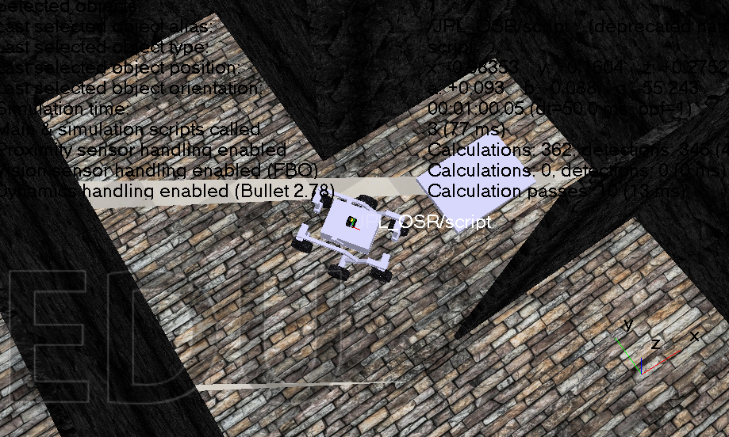
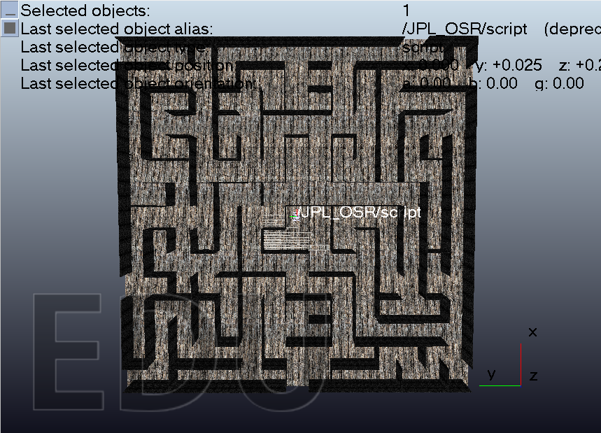

Context
This project was developed for a customer in 2026 and focused on simulating a robot that could explore a maze and determine a path to the goal. The work centered on autonomous navigation logic, environment interaction, and validating how control strategies behave in a constrained virtual world.
The problem
A maze-solving robot must balance sensing, decision-making, and motion control under uncertain conditions. The challenge was building a robust simulation environment where the robot could reason about walls, turns, and goal detection while preserving a clear and testable control strategy.
What was built
The project used CoppeliaSim to model the robot and the maze environment, then tested motion and logic strategies in a controlled simulation. This allowed rapid iteration on pathfinding behavior and design adjustments before translating the concept into a physical or more advanced implementation.
System thinking
Environment model
The maze environment was defined to capture real constraints, including walls, turns, and goal locations that influence navigation decisions.
Control strategy
Robot logic and movement behavior were tuned to explore the maze reliably and complete a route to the target through iterative sensing and correction.
Results and lessons
This project demonstrates how simulation is a powerful tool for validating robotics logic before deployment. It highlights the value of testing autonomy in a controlled environment, where algorithmic decisions can be refined quickly and used to support more robust physical implementation later.
Visual documentation


